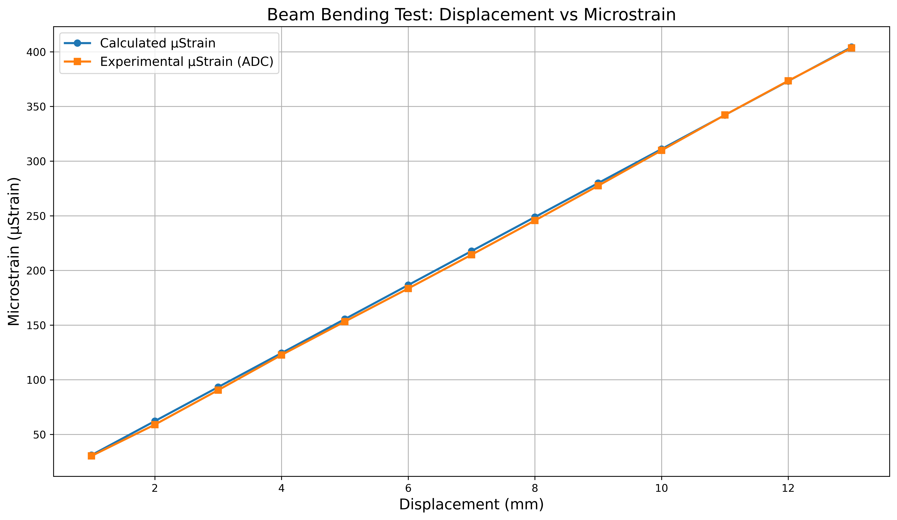
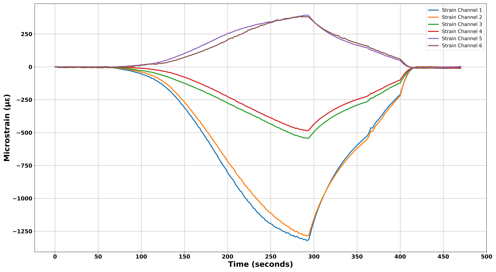

01 — Application
What Is This System Actually For?
This strain gauge instrumentation system is the sensing core of a rock stress measurement tool deployed in pilot holes during geotechnical drilling campaigns. Understanding in-situ rock stress is critical in mining, tunnelling, and civil engineering — it informs structural design, slope stability analysis, and excavation planning.
Why Resolution Matters in Rock Stress Measurement
In practical rock stress and in-situ strain measurement — such as overcoring or hollow inclusion cell systems — a microstrain resolution of around 1–5 µε is typically required to obtain reliable stress calculations. Anything worse than ~10 µε can significantly increase uncertainty in the derived stress state.
This requirement is strongly driven by rock stiffness. Because strain is inversely proportional to Young's modulus (ε = σ/E), stiff competent rocks such as granite or basalt produce relatively small strain responses to a given stress change — often only a few hundred microstrain. The instrument must therefore resolve small strain variations reliably to maintain accuracy in stress inversion. Softer or more fractured rocks generate much larger strain responses (sometimes exceeding 1000 µε for similar stress levels), making measurement easier, but stress instruments are generally designed to meet the more demanding case of stiff rock.
This places the system's validated RMSE of 2.33 µε and average standard deviation of 1.44 µε squarely within the required performance envelope — sufficient for reliable stress calculations even in high-modulus rock formations.
02 — System Architecture
Signal Chain Overview
The complete acquisition chain runs from strain gauge excitation through to post-processed microstrain output in Python. Each stage introduces noise, offset, or drift that the system design must manage.
03 — Channel Configuration
8 Inputs + 1 Internal Reference
The ADC supports 8 external input channels plus one internal reference channel, used as follows:
| Channel | Function | Purpose |
|---|---|---|
| CH1 – CH7 | Quarter-bridge strain gauges | Active strain measurement (7 independent gauges) |
| CH8 | NTC thermistor output | Temperature logging for thermal drift characterisation |
| Internal Ref | ADC internal reference channel | Drift compensation baseline — subtracted from all active channels to cancel common-mode temperature effects |
Having the NTC thermistor on a dedicated ADC channel — sampled synchronously with the strain channels — means every data frame carries both strain and temperature readings, allowing the Python post-processing pipeline to correlate drift directly with temperature change without any timing ambiguity.
04 — Context & Constraints
Physical and Performance Constraints
Strain gauges generate signals in the microvolt to millivolt range, making the entire acquisition chain — excitation stability, amplifier noise, ADC resolution, and thermal behaviour — critical to final accuracy. For this system, those challenges were compounded by a severe physical constraint: the entire electronics assembly had to fit inside a 27 mm diameter tube, placing tight pressure on PCB layout and component selection.
Beyond size, the system needed to meet a set of field-deployment requirements: low power consumption for battery operation, repeatable calibration, stable performance under real-world temperature variation, and multi-channel synchronised sampling. None of these are unusual requirements in isolation — achieving them together in a compact, validated package is what this project was about.
05 — Component Selection
Choosing the Right Parts for the Right Reasons
Each component was selected based on a specific constraint or performance requirement, not just datasheet headline specs.
Sensor
1000 Ω Quarter-Bridge Strain Gauges
Higher resistance than the typical 120 Ω or 350 Ω gauges, which directly reduces excitation current draw and extends battery life — without compromising signal sensitivity.
ADC + Amplification
Texas Instruments 24-bit ADC
Chosen for integrated PGA (eliminating external amplification), simultaneous multi-channel sampling for synchronised strain readings, and SPI interface for clean MCU communication. 24-bit resolution allows accurate capture of microvolt-level signals.
Microcontroller
STM32 Ultra-Low-Power MCU
Selected for its ultra-low-power architecture, SPI peripheral support for the ADC, and sufficient flash and RAM for calibration storage and acquisition logic. Keeps the system light on current while handling deterministic timing.
Excitation
3 V LDO Regulator
A stable, low-noise excitation supply was critical because any variation in bridge excitation directly corrupts the output. The LDO provides clean, regulated 3 V regardless of battery voltage variation, reducing supply ripple and measurement inconsistency.
06 — Gain Selection
Why Gain Selection Required Experimental Validation
Quarter-bridge outputs are in the microvolt to millivolt range, so gain selection is critical: too low and you waste ADC resolution; too high and you risk saturation from offset voltages. The standard approach is to check datasheet resistance tolerance and work out worst-case bridge offset — which suggested that all gain settings from 16 to 128 would be safe.
That assumption didn't hold. Experimental testing across 7 system sets, 21 gauges each, revealed a worst-case offset of −12.73 mV, corresponding to an effective gauge resistance tolerance of 1000 ± 18 Ω — significantly worse than the datasheet's ±4 Ω. This immediately eliminated Gain 128, whose ADC input range of ±9.375 mV would saturate under real conditions.
Full-scale strain range further constrained the choice. At the ultimate strain rating of 20,000 µm/m, the bridge output shifts by approximately +31.6 mV, which saturates Gain 64 in high-strain scenarios. The final design therefore uses Gain 32 as default and Gain 16 for high-strain events, balancing resolution with adequate measurement headroom.
| Gain | ADC FSR (±) | vs. Worst Offset | vs. Full-Scale Strain | Decision |
|---|---|---|---|---|
| 128 | 9.375 mV | Saturates (−12.73 mV) | Saturates | Rejected |
| 64 | 18.75 mV | Safe | Risk at high strain | Not used |
| 32 | 37.5 mV | Safe | Safe | Default |
| 16 | 75 mV | Safe | Safe | High-Strain |
This is a good example of why datasheet analysis alone is insufficient for production designs. The experimental offset data changed the gain selection outcome meaningfully — and doing that testing across a realistic sample size (147 gauges) gave confidence the final choice was robust.
07 — Firmware
The MCU as a Real-Time Acquisition Engine
Strain calculations were handled offline in Python, so the firmware had one job: capture accurate, synchronised, time-stamped data reliably over long sessions, and make that data fully traceable. That sounds simple. In practice, it meant solving several concrete problems.
Challenge
Multi-channel acquisition without dropped samples or channel misalignment.
Solution
Deterministic sampling loop with fixed channel sequencing (read-all mode), ensuring every ADC frame contained synchronised readings from all channels simultaneously.
Challenge
Timing stability while streaming large data frames over UART.
Solution
Structured binary/encoded messages with a command-response protocol, allowing the host to configure gain, OSR, and sampling mode without interrupting acquisition.
Challenge
Corrupted UART packets silently invalidating strain data during long logging sessions.
Solution
CRC8 validation on every response packet. The Python pipeline verifies CRC8 and rejects invalid frames before any post-processing begins.
Challenge
Gain and OSR needed to be tunable during bench validation without reflashing firmware.
Solution
Runtime firmware commands to dynamically configure gain and oversampling ratio, enabling rapid iteration during testing without a build-flash cycle.
Challenge
Ensuring measurement repeatability was traceable across multiple test setups and wiring conditions.
Solution
Board-ID and configuration reporting included in every dataset header, so gain, OSR, and sample count were always captured alongside the measurements themselves.
08 — Data Pipeline
Python Post-Processing Pipeline
The STM32 firmware acts purely as a deterministic acquisition and transport engine — it doesn't compute microstrain. All signal processing, calibration, reference subtraction, drift correction, and Young's modulus calculation are handled offline in a Python pipeline. This keeps the firmware simple and deterministic while allowing the post-processing logic to evolve without firmware reflashing.
Every response frame from the board is a structured, tagged, CRC8-validated packet. A sample line from a logging session looks like this:
Values of -8388608 represent the minimum 24-bit signed integer value (−2²³) — channels not connected or not in use return this sentinel value, which the Python script filters out before processing. The Gain code 5 maps to ×32 amplification (see lookup below). The pipeline verifies CRC8 on every frame, discards any invalid packet, then converts valid ADC codes to microstrain using the calibration coefficients, applies reference subtraction for drift compensation, and outputs time-series strain data alongside temperature.
Gain Code Lookup
| Code | Gain | Note |
|---|---|---|
0 | ×1 | |
1 | ×2 | |
2 | ×4 | |
3 | ×8 | |
4 | ×16 | High-strain fallback |
5 | ×32 | Default — as seen in log above |
6 | ×64 | |
7 | ×128 | Rejected — saturates at real-world offsets |
09 — Accuracy Validation
Beam Bending Test Against Euler–Bernoulli Theory
System accuracy was validated through a beam bending calibration, applying controlled end displacement from 1 mm to 13 mm in discrete steps while recording strain from the full acquisition chain. An analytical strain prediction was generated using standard small-deflection Euler–Bernoulli beam theory, converting applied displacement to surface strain at the gauge location for the test specimen geometry (length ≈ 340 mm, width ≈ 32 mm, thickness ≈ 3 mm, gauge position ≈ 310 mm from support).
The experimental strain — derived from ADC output codes via the bridge equations at 3 V excitation — closely tracked the analytical prediction across the full displacement range, with near-identical linear behaviour. The error metrics confirmed strong agreement:
The measured system sensitivity of 0.00284 µε/LSB (≈ 352.5 LSB per µε) enabled reliable sub-microstrain detection, with sufficient resolution headroom for offset and temperature drift effects in field conditions.

10 — Noise & Resolution
Quantifying the Noise Floor
Noise performance was quantified by recording a zero-strain dataset with the beam fully unloaded. The ADC sampled at 256 samples/sec with the MCU reporting one output sample every 2 seconds. This averaging-based approach is a key reason for the low observed noise floor.
17.8 effective bits is close to the theoretical limit for a well-designed 24-bit acquisition chain and confirms that the analog front end — excitation, PCB layout, and signal conditioning — did not meaningfully degrade the ADC's intrinsic noise performance. For a 27 mm diameter board operating in a field environment, this is a strong result.
11 — Thermal Drift
67-Hour Thermal Drift Test and Reference Subtraction
Thermal drift is a practical concern for any strain system deployed in the field, particularly one intended for long-duration borehole measurements where temperature can vary significantly. Rather than relying on datasheet TCR figures, a direct characterisation was performed: the complete system — bridge excitation, ADC, and MCU — was left running for 67 hours with no mechanical load applied, logging all seven strain channels, the internal reference channel, and temperature continuously throughout.
Test Conditions
The test captured two full thermal cycles, with temperature peaking at 45–47°C and returning to a baseline of 9–12°C — a total differential range of 39.6°C. The sharp thermal spikes visible in the temperature log correspond to a deliberate heat source introduced at approximately 20 and 44 hours, followed by natural cool-down. This produced a far more demanding characterisation window than a simple overnight test.

From Microstrain to Resistance Change
Strain gauge drift is most meaningfully expressed as an equivalent change in gauge resistance, as this directly quantifies the measurement error introduced by temperature rather than an applied mechanical load. The conversion from microstrain to ΔR uses the fundamental strain gauge equation:
For example, a drift of 200 µε corresponds to ΔR = 200 × 10⁻⁶ × 2.1 × 1000 = 0.42 Ω. Because the gauge resistance is large (1000 Ω), even a small fractional resistance change produces a measurable microstrain reading — which is why quantifying drift in ppm/°C of nominal resistance gives a standardised, comparable figure across different gauge configurations.


Compensation: Reference Subtraction
Because temperature affects the bridge excitation, ADC, and all gauges simultaneously, much of the apparent drift is common-mode — it appears on every channel in the same direction. The internal reference channel, with no applied mechanical strain, captures this common-mode component. Subtracting the reference from each active channel cancels the shared thermal effect without requiring individual TCR characterisation of every gauge.

Drift Results
Drift was quantified over the full 39.6°C temperature differential. The worst-case channel was used in both cases.
| Metric | Without Ref Subtraction | With Ref Subtraction | Improvement |
|---|---|---|---|
| Max ΔR (worst channel) | 1.662 Ω | 0.891 Ω | 46% reduction |
| Max deviation (% of 1000 Ω) | 0.00166% | 0.000891% | — |
| Max deviation (ppm) | 1661.9 ppm | 891.0 ppm | — |
| Thermal drift rate | 41.97 ppm/°C | 22.50 ppm/°C | 46% reduction |
The reference subtraction reduces worst-case drift by 46% — from 41.97 to 22.50 ppm/°C — across a challenging 39.6°C temperature swing over 67 hours.
It is important to note that this measured drift figure is not just the strain gauge drift in isolation. It is the combined thermal drift of the entire system — including the strain gauges, the 24-bit ADC, the filter resistors, the LDO excitation supply, and any other components in the signal chain. Each of these contributes a small temperature-dependent error, and what is reported here is the net effect of all of them together. This makes the 22.50 ppm/°C figure a true end-to-end system specification, not a component-level one.
12 — UCS Machine Testing
Beyond the Bench: Rosette Gauge Testing on a UCS Machine
Beam bending provides a clean, controlled validation of the acquisition chain in a lab setting. But the actual field tool needs to be tested and validated under conditions that more closely resemble how it will be loaded in a borehole — with axial compressive stress applied to a cylindrical body, and no prior knowledge of the principal stress directions.
Why a Rosette Gauge?
A single strain gauge only measures deformation along one axis. In a real stress measurement scenario, the orientation of the maximum stress is not known in advance — and assuming it aligns with any particular gauge would introduce systematic error. A three-element rosette is used precisely when the directions and magnitudes of the principal strains and stresses are unknown. The rectangular (0°–45°–90°) rosette was selected for this system. Three gauges oriented at 0° (axial), 45° (diagonal), and 90° (circumferential) are bonded to the cylindrical aluminium body of the tool, simultaneously capturing strain in all three directions under load. From these three measurements, the principal strains, principal stresses, and the angle of maximum stress can all be back-calculated — no prior knowledge of stress orientation required.
For the rectangular rosette with gauges A, B, C at 0°, 45°, 90° respectively, the principal strains and their directions are derived from the three measured normal strains using standard transformation equations, giving both the magnitude and orientation of the maximum principal stress. For the aluminium test specimen with a known Young's modulus (60–70 GPa), this provides a direct cross-check: the stress back-calculated from the rosette readings must agree with the independently measured applied load from the UCS machine.
Test Configuration
A rosette strain gauge is bonded to a cylindrical aluminium specimen instrumented with the full acquisition chain. The specimen is placed in the UCS machine, which applies a controlled, increasing axial compressive load. The system logs all six active strain channels continuously throughout the loading and unloading cycle. The resulting waveforms capture the full load-hold-unload sequence and confirm that the gauges respond linearly and return cleanly to zero on unloading — a key indicator of elastic (non-permanent) deformation and correct gauge bonding.

The waveform data reveals physically consistent behaviour across channels. The axial gauges (channels 1–4) show negative microstrain — compressive deformation along the loading axis — while the circumferential gauges (channels 5–6) show positive strain, reflecting Poisson's ratio expansion of the aluminium in the transverse direction. This cross-channel consistency is itself a validation: the sign and relative magnitude of each channel's response is predictable from first principles, and the system reproduces it accurately.
Noise Statistics — Pre-Load Baseline (First 50 Samples)
Noise statistics were extracted from the first 50 samples of each channel — captured before significant load was applied — giving a clean measurement of system noise at quasi-zero strain. All channels show RMS noise well below 2 µε, with the majority under 1 µε, confirming the system comfortably meets the 1–5 µε resolution requirement for reliable rock stress inversion.
| Strain Channel | Mean (µε) | Std Dev (µε) | RMS Noise (µε) | Peak-to-Peak (µε) | Min (µε) | Max (µε) |
|---|---|---|---|---|---|---|
| Channel 1 | −0.39 | 0.68 | 0.68 | 2.62 | −1.66 | 0.96 |
| Channel 2 | 0.54 | 0.63 | 0.63 | 2.39 | −0.44 | 1.96 |
| Channel 3 | 0.64 | 0.63 | 0.63 | 2.50 | −0.35 | 2.15 |
| Channel 4 | −0.31 | 0.60 | 0.60 | 2.25 | −1.46 | 0.79 |
| Channel 5 | −1.92 | 0.98 | 0.98 | 3.62 | −3.46 | 0.16 |
| Channel 6 | −4.74 | 1.83 | 1.83 | 7.28 | −7.28 | 0.00 |
This test goes beyond bench-level validation. The full tool — PCB, gauges, firmware, and acquisition chain — was exercised under realistic compressive loading, confirming both the noise floor and the physical correctness of the multi-channel strain response before field deployment.
13 — Power Budget
Battery Life
With a measured system current of ~40 mA, a 4×AA pack (2500 mAh series configuration) delivers approximately 62.5 hours (~2.6 days) of continuous runtime — adequate for multi-day field deployments without recharging.
14 — Hardware
Final PCB Implementation
The final hardware is a custom compact PCB integrating the LDO excitation supply, multi-channel ADC interface, and STM32 control — all designed to fit within the 27 mm diameter cylindrical housing constraint. Component placement and routing were driven by that constraint alongside the need to minimise noise coupling between the excitation, analog signal, and digital sections.

15 — Outcome
Engineering Result
A fully validated multi-channel strain measurement system for in-situ rock stress measurement in pilot boreholes. Key results: 17.8-bit effective resolution, 2.33 µε RMSE against Euler–Bernoulli beam theory, 22.50 ppm/°C thermal drift after reference subtraction (down from 41.97 ppm/°C), measured over a 39.6°C temperature swing across 67 hours, and UCS machine testing confirming physically consistent multi-channel response across a ~1250 µε load range with per-channel RMS noise of 0.60–1.83 µε — well within the 1–5 µε target for reliable stress inversion in stiff rock. All of this within a 27 mm diameter form factor at ~40 mA operating current, validated across beam bending, overnight drift characterisation, a 147-gauge real-sample gain selection study, and full-system rosette testing on a UCS machine.